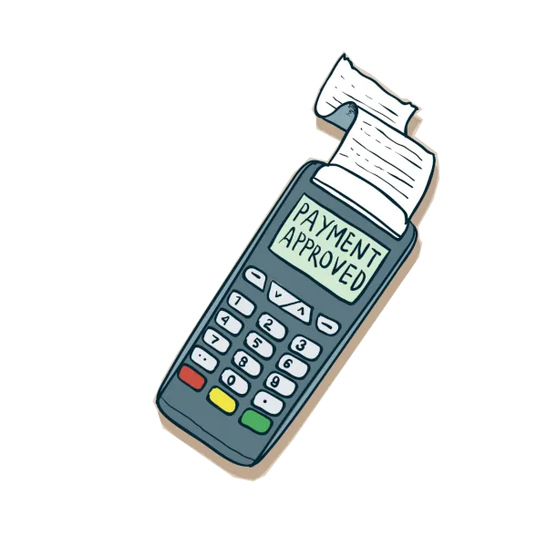

Sobre festival
El Pol'and'Rock Festival, anteriormente conocido como Woodstock Polonia, es uno de los festivales de música rock gratuitos más grandes de Europa, celebrado anualmente en Polonia desde 1995. Organizado por la Fundación Gran Orquesta de Ayuda Navideña como agradecimiento a los voluntarios, el evento promueve el "Amor, Amistad y Música" con un ambiente inspirado en el Woodstock original de 1969.
Compra tu entrada
